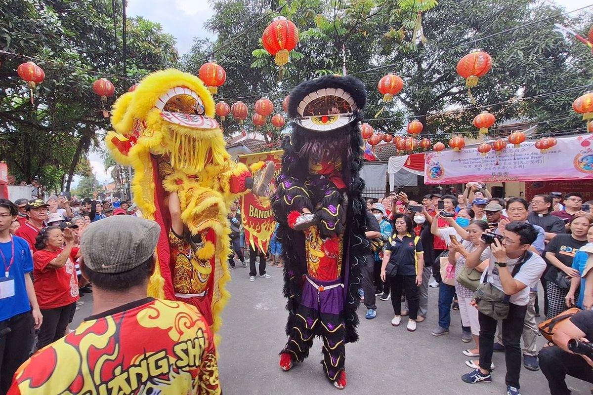
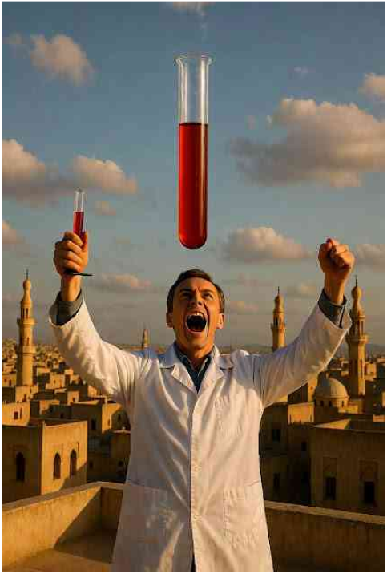

Jakarta
Penampakan 5 Koper Berisi Duit Rp5 Miliar dalam Penggeledahan Suap
KPK menyita uang lebih dari Rp5 miliar pecahan mata uang asing...

Kronologi Oknum Brimob Aniaya Pelajar di Tual Maluku hingga Tewas, Ditetapkan Tersangka
Kepolisian Resort (Polres) Tual, Maluku, membeberkan kronologi dugaan penganiayaan yang dilakukan oknum Brimob Bripda MS terhadap seorang pelajar berinisial AT (14) hingga menyebabkan korban tewas.


Gus Yahya: Perbedaan itu Sunnatullah, Tak Perlu Konflik
BY. KOMPAS.COM
Anomali Medan Magnet Bumi Terus Bergeser
BY. KOMPAS.COM
Waspada Modus Penipuan Phishing Paket Kurir
BY. KOMPAS.COM
Google Blokir 1,73 Juta Aplikasi Nakal dari Play Store
Siap-siap Harga Hard Disk, Router, STB Naik Imbas Krisis Memori Global
Pembebasan TKDN Produk AS, iPhone Bisa Cepat Masuk RI dengan Harga Lebih Murah
Anomali Gravitasi Raksasa di Bawah Antartika Terdeteksi Semakin Kuat
Antioksidan Tempe Melindungi Terjadinya Oksidasi Kolesterol
China Kembangkan Sistem Penggerak Gelombang Mikro yang Mampu Matikan Satelit
GP Ansor: Diplomasi Prabowo di BoP untuk dunia yang lebih damai
Waka Komisi VI: Impor kendaraan niaga kopdes harus sejalan konstitusi
Komisi VIII DPR: Sertifikasi halal jaga kedaulatan pangan dan industri

Perayaan Cap Go Meh di Bogor Digelar 1-3 Maret, Jalan Suryakencana Ditutup
Siap-siap Harga Hard Disk, Router, STB Naik Imbas Krisis Memori Global
Pembebasan TKDN Produk AS, iPhone Bisa Cepat Masuk RI dengan Harga Lebih Murah
Setahun Pramono-Rano Menenun Jakarta, dari Budaya Betawi hingga Janji ke Warga
Siap-siap Harga Hard Disk, Router, STB Naik Imbas Krisis Memori Global
Pembebasan TKDN Produk AS, iPhone Bisa Cepat Masuk RI dengan Harga Lebih Murah

Mengapa Eropa Akhirnya Melampaui Dunia Islam dalam Sains? Analisis Historis, Epistemologis, dan Institusional
Artikel ini menganalisis faktor-faktor utama yang menyebabkan Eropa Barat melampaui dunia Islam dalam pengembangan sains sejak abad ke-16, meskipun dunia Islam sebelumnya menjadi pusat ilmu pengetahuan global.
Dengan pendekatan sejarah sains dan filsafat pengetahuan, artikel ini berargumen bahwa pergeseran tersebut bukan disebabkan oleh superioritas intelektual atau teologis Eropa, melainkan oleh perubahan struktural dalam institusi, epistemologi, dan relasi antara ilmu, kekuasaan, dan ekonomi.
Artikel ini menunjukkan bahwa kemunduran relatif sains di dunia Islam bersifat historis dan kontingen, bukan inheren dalam ajaran Islam itu sendiri.
BY. RITA MF JANNAH